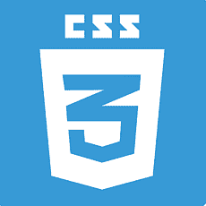
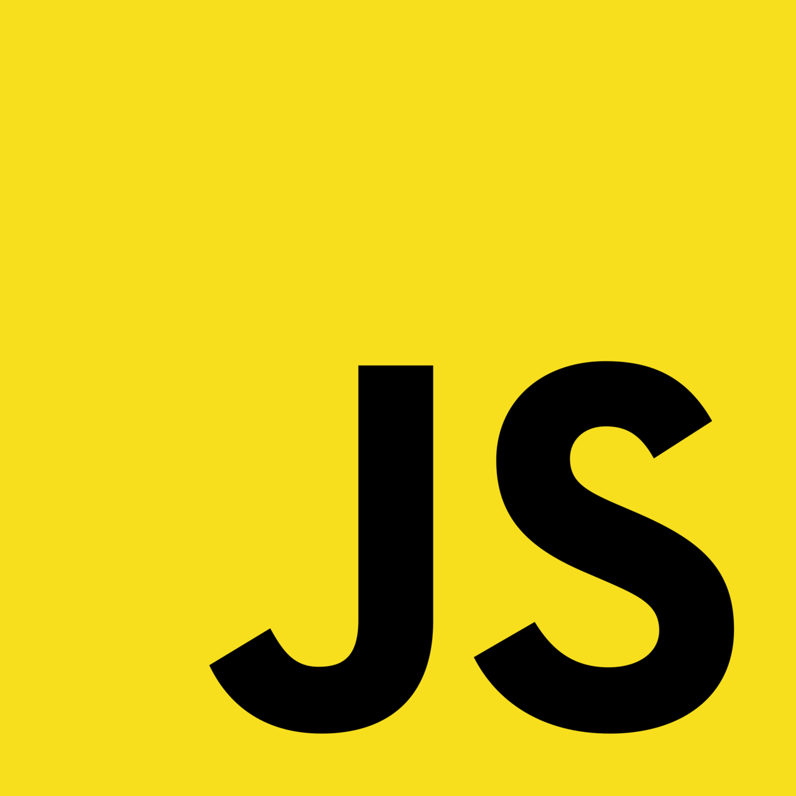

About me
I am Vadiraj Joshi, a dedicated Web Developer with a strong passion for crafting responsive and dynamic websites. With expertise in front-end and back-end technologies such as HTML, CSS, JavaScript, PHP, and MySQL, I specialize in building user-friendly and scalable web applications. I have a keen eye for design and functionality, ensuring that every project I develop is both visually appealing and highly efficient. Beyond coding, I continuously explore new technologies and frameworks to stay ahead in the ever-evolving digital landscape. My goal is to create innovative solutions that enhance user experiences and drive meaningful impact in the tech industry.
Skills

